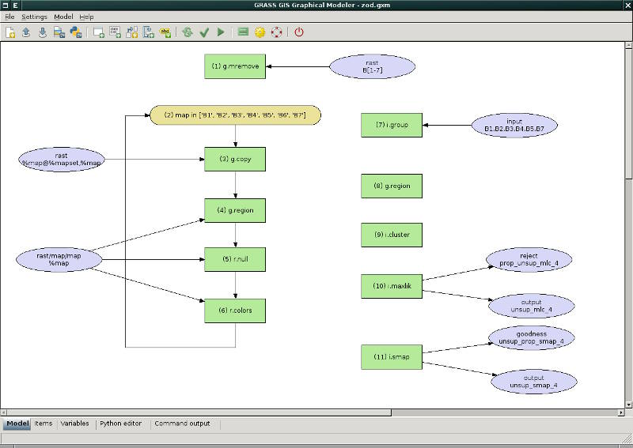

DESCRIPTION
The Graphical Modeler is
a wxGUI compoment which allows the
user to create, edit, and manage models. The modeler can be launched
from the menu File -> Graphical modeler or by
clicking on icon  in the toolbar. It's also available as stand-alone module g.gui.gmodeler.
in the toolbar. It's also available as stand-alone module g.gui.gmodeler.
The modeler currently allows to:
- define data items (raster, vector, 3D raster maps)
- define actions (GRASS commands)
- define relations between data and action items
- define loops (eg. map series) and conditions (if-else statements)
- define model variables
- parameterize commands
- define intermediate data
- validate and run model
- store model properties to the file (GRASS Model File|*.gxm)
- export model to Python script
- export model to image file

SEE ALSO
wxGUI
wxGUI components
g.gui,
g.gui.animation,
g.gui.mapswipe,
g.gui.psmap,
g.gui.rlisetup
User-defined models available
from SVN.
See also
the wiki page
(especially various video
tutorials).
AUTHOR
Martin Landa, Czech Technical University in Prague, Czech Republic
$Date$